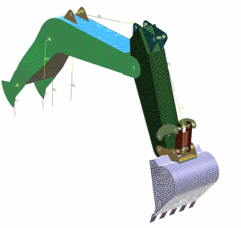

装配有限元模型概述
装配有限元模型(.afm)文件支持增强的工作流程，以分析大型装配。装配有限元模型 类似于部件装配。装配有限元模型中包含：
-
组件有限元模型的事例以及位置数据
-
将组件有限元模型组成一个系统的连接单元
-
组件有限元模型的网格中的材料和物理属性替代

装配有限元模型支持多个有限元模型事例 — 您可将相同的有限元模型映射到装配层次结构中部件的多个事例。可将装配有限元模型映射到较大装配有限元模型中的子装配。
对组件有限元模型进行的编辑将立即反映在装配有限元模型中，以及在组件有限元模型的所有事例中。